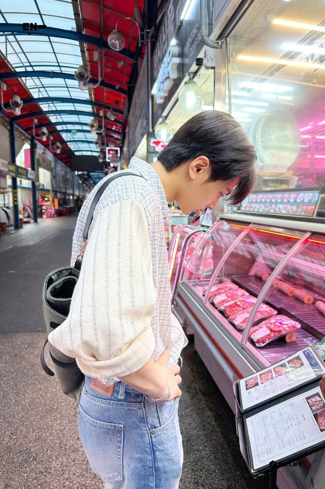

JAY

Stage Name:
Jay
Birth Name:
Park Jongseong
Date of Birth:
20th April,2002
Birth Place:
Seattle, Washington, United States of America
Nationality:
Korean-American
MBTI:
ENFJ
Zodiac Sign:
Taurus
Blood group:
B
Height:
180cm
Facts about Jay
He was born in Seattle, Washington, USA but moved to South Korea when he was nine years old.
His father is a President at Sinar Tours.
He’s an only child.
Nickname: Angry Bird
Education: Hanlim Multi Arts School (Practical Dance department).
He, Heeseung, Sunghoon and Jungwon were trainees under Big Hit Entertainment.
He attended LP Dance Academy before joining Big Hit.
He trained for two years and eleven months before taking part in I-LAND.
He earned second place in the final of I-LAND (1,182,889 votes).
He and Sunghoon performed together NCT U‘s The 7th Sense in the first episode of I-LAND.
He can speak conversational Japanese, which he learned by watching anime and listening to radio shows.
Jay is a passionate guitar player. He plays the guitar daily and brings one on tour when he travels. He currently has a collection of 9 guitars.
He’s good at hip-hop style dance.
Jay is the best cook of the group. His dream was to be a chef when he was younger. Gordon Ramsay is Jay’s favorite chef.
He enjoys playing games and shopping for clothes.
He’s very knowledgeable about fashion and would like to design stage/concert outfits for ENHYPEN in the future.
He is interested in other cultures and often studies and learns about different cultures in detail.
His favorite color is purple.
His favorite season is autumn.
He likes clothes and fashion in general.
He enjoys cooking and eating delicious food.
When he was younger, he dreamt of being a chef.
His favorite animated show is Pororo.
His favorite ice cream flavor is pistachio.